Lab Introduction
In this lab, you will add and configure Alarm Border and Visibility animations for various graphic elements and symbols. You will add a text box element to the MixingProcess_Detailed symbol and configure it as an alarm indicator. You will use the SA_AlarmSeverity symbol from the Situational Awareness Library to create alarm summary symbols for area and non-area objects, then test alarm modes at runtime.
Objectives
Add an Alarm Border animation to a graphic element
Enable alarm border Wizard Options for Situational Awareness Library symbols
Configure the SA_AlarmSeverity symbol
Use the SA_AlarmSeverity symbol to change alarm modes
Review alarm adorners in the built-in navigation Apps
Part 1: Create System Malfunction Display with Alarm Border Animation
Step 1. On the Templates tab, double-click $Mixer to open it in the Object Editor.
Step 2. In the Content pane, double-click the MixingProcess_Detailed symbol to open the Graphic Editor.
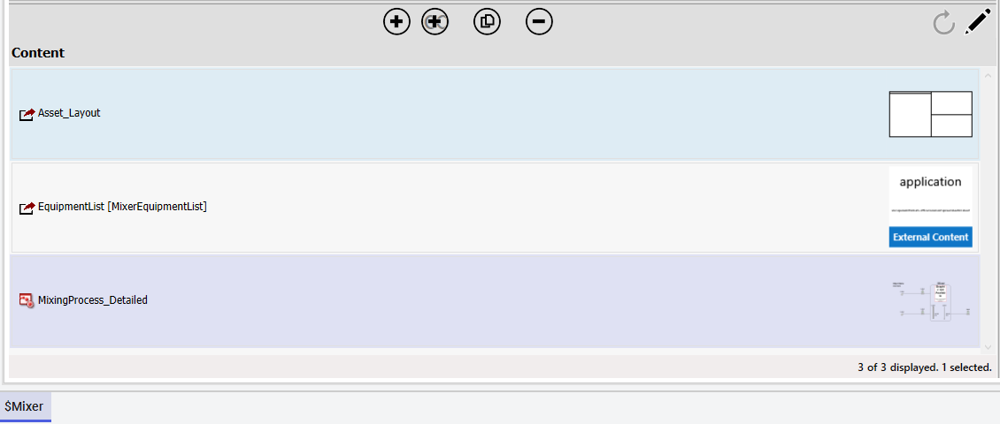
Open MixingProcess_Detailed — Double-click this symbol in the $Mixer template's Content pane to open the Graphic Editor.
Step 3. In the Tools pane, select the Text Box tool.
Step 4. On the drawing canvas, add a text box element below the AreaName element.
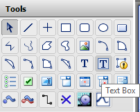
Drawing canvas — A TextBox1 element is added below the AreaName element on the grid.
Step 5. Configure the text box properties on the Properties tab:
Property
Value
Graphic → Name
AlarmIndicator
Appearance → ElementStyle
Alarm_Critical_UNACK
Appearance → Width
160
Appearance → Height
30
Appearance → Text
System Malfunction
Step 6. Set the Text Style → Alignment property to Centers.
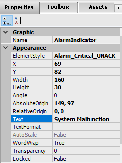
AlarmIndicator properties — Configure name, ElementStyle (Alarm_Critical_UNACK), dimensions, and text.
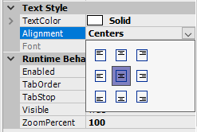
AlarmIndicator on canvas — Red background (from Alarm_Critical_UNACK style) with centered "System Malfunction" text.
Configure Alarm Border Animation
Step 7. Double-click the AlarmIndicator text box to open the Edit Animations dialog. Add an Alarm Border animation.
Step 8. In the Object or Field-Attribute Name field, enter Me.Alarm.Condition. All alarm urgency references are automatically populated.
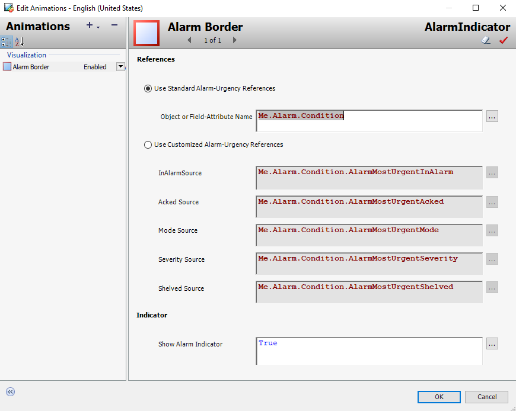
Alarm Border animation — Enter "Me.Alarm.Condition" as the object reference. The system auto-populates all urgency attribute sources.
Configure Visibility Animation
Step 9. Add a Visibility animation with the Boolean expression: Me.Alarm.Condition.InAlarm or not Me.Alarm.Condition.Acked
Explanation: This expression makes the AlarmIndicator visible when an alarm is active OR when the alarm has not yet been acknowledged. It hides when the alarm is both inactive and acknowledged.
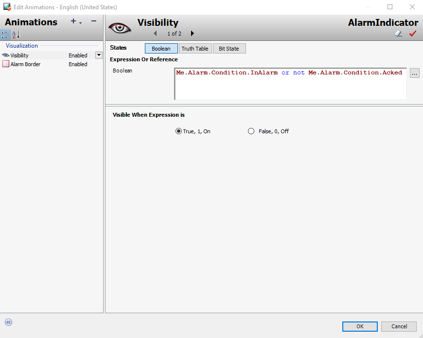
Visibility animation — The expression ensures the "System Malfunction" text is visible only when there's an active or unacknowledged alarm.
Steps 10–12. Click OK, save and close MixingProcess_Detailed, save and close $Mixer, and check it in.
Part 2: Enable Alarm Border for SA Library Symbols
Step 13. On the Graphics tab, open the Level_Detailed symbol.
Step 14. Select the SA_Meters1 symbol on the drawing canvas.
Step 15. On the Properties tab, set Wizard Options → SymbolMode to Advanced.
Step 16. Set Wizard Options → AlarmBorder to True.
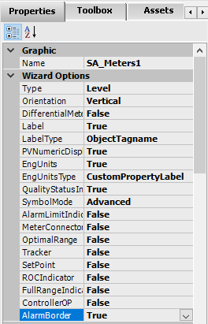
Enable alarm border on SA_Meters1 — Set SymbolMode to Advanced and AlarmBorder to True in Wizard Options.
Configure Custom Properties
Step 17. Right-click the symbol on the drawing canvas and select Custom Properties.
Step 18. Select the AlarmMostUrgentShelved custom property and change its Default Value from False to: Me.PV.AlarmMostUrgentShelved
Steps 19–20. Click OK, save and close Level_Detailed, and check it in.
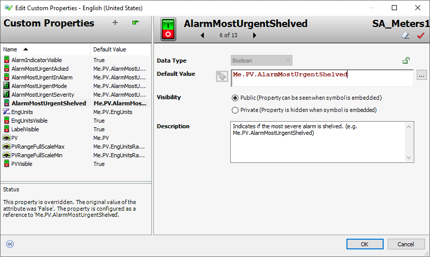
Custom Properties — Map AlarmMostUrgentShelved to Me.PV.AlarmMostUrgentShelved so the symbol reflects the shelved status of its linked attribute.
Part 3: Create SA_AlarmSeverity Symbols
Step 21. On the Graphics tab, create a new symbol named AlarmSummary_Area.
Step 22. Double-click to open it in the Graphic Editor.
Step 23. On the Toolbox tab, search for the SA_AlarmSeverity symbol and embed it on the drawing canvas.
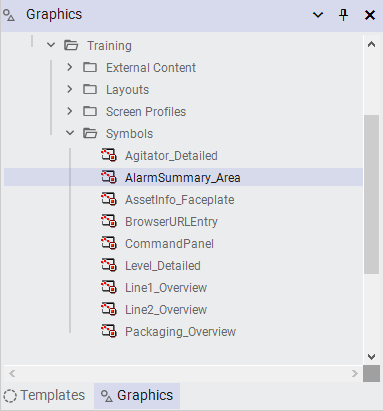
Create AlarmSummary_Area — A new symbol in the Training\Symbols toolset.
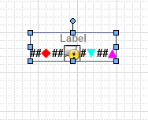
SA_AlarmSeverity symbol — Embedded from the Situational Awareness Library with alarm severity indicators and mode controls.
Configure Wizard Options for Area Objects
Step 24. With SA_AlarmSeverity1 selected, configure Wizard Options:
Property
Value
Wizard Options → Type
AlarmPanel
Wizard Options → LabelType
ObjectTagname
Wizard Options → AlarmBorder
True
Wizard Options → IsAreaObject
True
Step 25. Set Graphic → Size to Fixed, FixedWidth to 250, FixedHeight to 250.
Step 26. Set Runtime Behavior → ContentType to Alarm Summary.
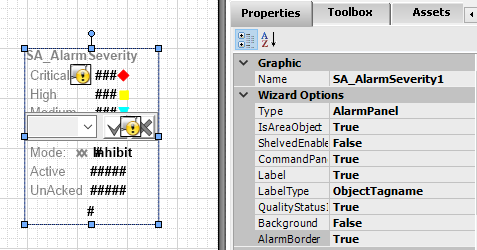
SA_AlarmSeverity Wizard Options — Configure as AlarmPanel with ObjectTagname label and AlarmBorder enabled.
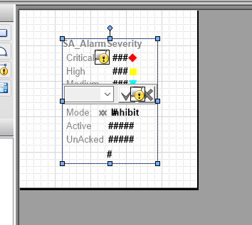
Configured SA_AlarmSeverity symbol — Repositioned to the center of the canvas showing Critical, High, Medium severity levels with mode controls.
Steps 27–28. Reposition the symbol to the center of the canvas. Save, close, and check in AlarmSummary_Area.
Create Non-Area Variant
Step 29. Duplicate AlarmSummary_Area and name the duplicate AlarmSummary_nonArea.
Steps 30–33. Open AlarmSummary_nonArea, select SA_AlarmSeverity1, and change Wizard Options → IsAreaObject to False. Save, close, and check in.
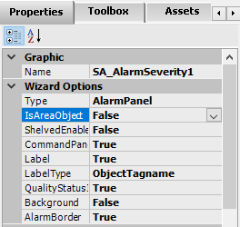
Non-area variant — Setting IsAreaObject to False changes the symbol's appearance to indicate it represents a non-area object.
Part 4: Link Alarm Symbols to Templates
Steps 34–37. Open $gArea, link AlarmSummary_Area to its Content, rename to "AlarmSummary", save and check in.
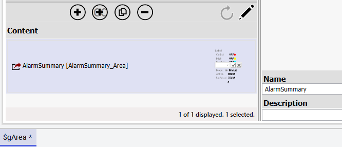
Link to $gArea — AlarmSummary_Area symbol linked and renamed to "AlarmSummary" in the template's Content pane.
Steps 38–40. Open $Mixer, link AlarmSummary_nonArea, rename to "AlarmSummary", save and check in.
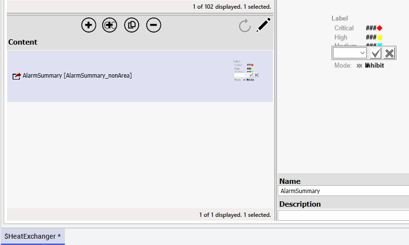
Link to $Mixer — AlarmSummary_nonArea linked and renamed to "AlarmSummary" for non-area objects.
Steps 41–43. Open $HeatExchanger, link AlarmSummary_nonArea, rename to "AlarmSummary", save and check in.
Part 5: Update the Main Layout
Step 44. On the Graphics tab, open the Main layout in the Layout Editor.
Step 45. With Pane1 selected, add a new pane at the bottom (Pane7).
Pane7 configuration — Content Type set to "Alarm Summary" with a height of 300 pixels.
Steps 47–48. Select the divider between Pane1 and Pane7, check General → Is Interactive.
Step 49. Save and close Main layout, and check it in.
Part 6: Test in Preview Session
Step 50. Switch to the ViewApp preview session and navigate to Mixer100.
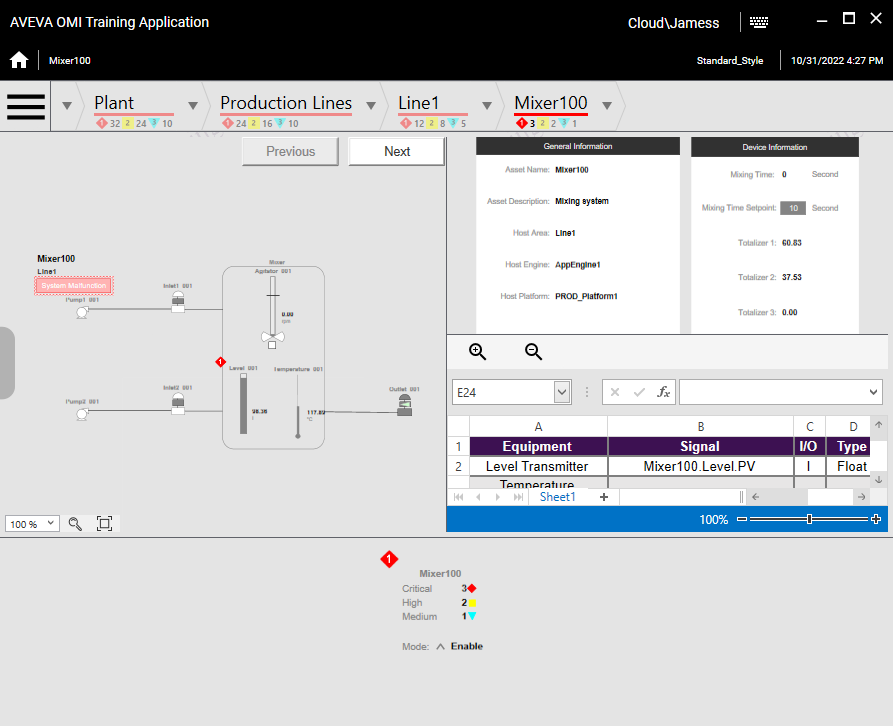
Mixer100 display — Alarm borders are visible on the mixer graphic elements. The AlarmSummary widget shows Critical, High, and Medium alarm counts.
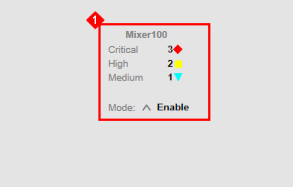
Mixer100 AlarmSummary widget — Non-area object alarm summary showing 3 Critical, 2 High, 1 Medium alarms with an alarm border.
Step 51. Navigate to Line1. The area-type AlarmSummary symbol displays with an alarm border.
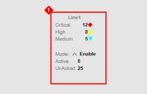
Line1 AlarmSummary — Area object alarm summary showing 12 Critical, 8 High, 5 Medium alarms with Active and UnAcked counts.
Test Alarm Mode Changes
Steps 52–53. Navigate to Production Lines. Click the up-arrow next to Mode in Production.AlarmSummary.
Steps 54–56. Select Inhibit from the dropdown, check the Inhibit checkbox, and click Apply. Mode changes to Inhibit.
Inhibit mode — The Inhibit option suppresses the area's alarms from parent-level aggregated counts.
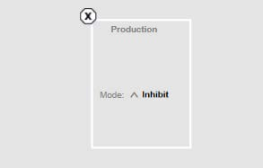
After Inhibit — The Production Lines node in the breadcrumb shows no alarm adorner, indicating alarms from this area are inhibited.
Steps 57–59. Observe that the NavBreadcrumbControl shows Plant node with alarm adorner but Production Lines without one. Navigate to Mixer100 and notice the alarm indicators change to reflect the inhibited state.
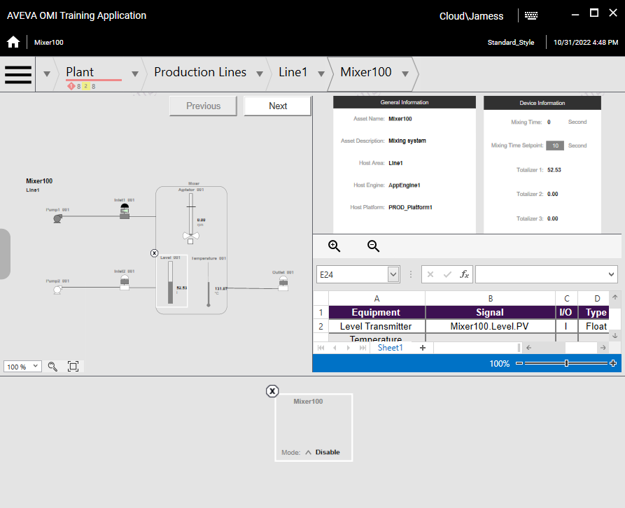
Inhibited state — Level_001 alarm indicator shows disabled state. System Malfunction label is also disabled because source alarms are inhibited.
Steps 60–63. Navigate to Production Lines, uncheck Inhibit, click Apply. Mode returns to Enable.
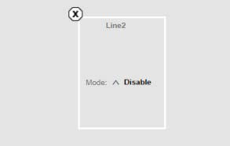
Mode restored to Enable — Alarm counts are now showing correctly with 4 Critical, 6 High, 8 Medium alarms active.
Steps 64–67. Verify Enable mode on Line1, Mixer100, and Line2. Then test Disable mode and observe all breadcrumb nodes become disabled.
Steps 68–71. Test Silence mode on Production Lines, observe changes, then restore to Enable.
Important: When finished testing, be sure to change Mode for Production.AlarmSummary back to Enable so you can see alarm activity in later labs.
Key Takeaway: This lab demonstrated three ways to add alarm information to graphics: (1) Alarm Border animation on custom elements, (2) SA_AlarmSeverity symbols for alarm summary panels, and (3) Alarm Mode controls (Inhibit, Disable, Silence) that affect alarm visibility and aggregation throughout the navigation hierarchy.
Knowledge Check
Q1: What expression controls the visibility of the AlarmIndicator text box?
Me.Alarm.Condition.InAlarm or not Me.Alarm.Condition.Acked — This shows the indicator when an alarm is active OR not yet acknowledged, and hides it when the alarm is both inactive and acknowledged.
Q2: What is the difference between AlarmSummary_Area and AlarmSummary_nonArea?
AlarmSummary_Area has IsAreaObject set to True (for area objects like Line1, Production), while AlarmSummary_nonArea has IsAreaObject set to False (for individual equipment objects like Mixer, HeatExchanger). The symbol appearance changes to reflect the object type.
Q3: What happens to child navigation items when a parent's alarm mode is set to Inhibit?
The parent's alarms are suppressed from parent-level aggregated counts, and child items may show disabled alarm indicators. The breadcrumb navigation reflects this by removing the alarm adorner from the inhibited node.
Q4: What ContentType must be set on a layout pane to display alarm summaries?
Alarm Summary — This tells the layout pane to display alarm summary information from the currently selected navigation context.
Q5: Why is it important to restore the alarm mode to Enable before finishing the lab?
Later labs depend on seeing alarm activity. If the mode remains Inhibit or Disable, alarm indicators won't display properly, making it impossible to test alarm-related features in subsequent exercises.